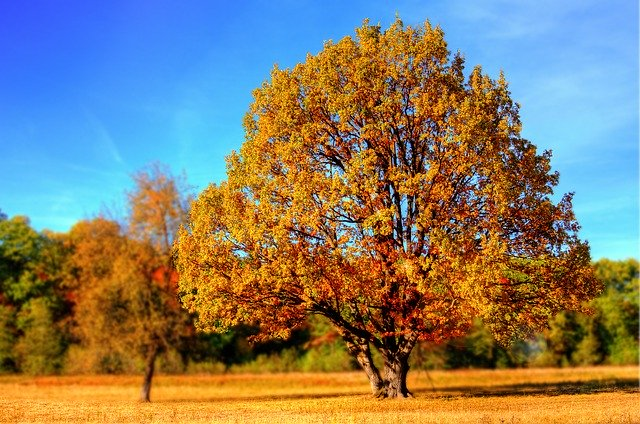

New York
I was born and raised in New York State. I went to college there. It is one of the most spectacular places in the country to live. New York is full of fun activities and many outdoor sports to take advantage of in any kind of weather. The mountains are exquisite at any time but breath taking in the fall. The fall colors fill you with joy. We were not too far from the capital of Albany.
Over the past four centuries, Albany has grown from a small Dutch settlement into New York State's Capital City in the heart of burgeoning Tech Valley. Discover downtown Albany's booming craft beverage industry, must-see attractions and vibrant culture. Revel in the region's rich history with world-class museums, historic homes and fascinating architecture. Explore beyond the city limits for scenic views and thrilling outdoor adventures in the Helderberg Hilltowns. Albany County is a destination that is beyond conventional.
New York is also know for it's Erie Canal. The original Erie Canal, constructed between 1817 and 1825, connected Albany on the Hudson River, with Buffalo, a small emerging village at the eastern end of Lake Erie. Over 360 miles in length, "Clinton's Ditch," as it was known, provided the first continuous connection by water between the eastern and western ends of New York State, and prior to the advent of the railroad, the canal was the primary means of transporting goods across the state. Today, the Erie Canal and a network of connecting waterways are still in service as America's most iconic and enduring man-made waterway.
